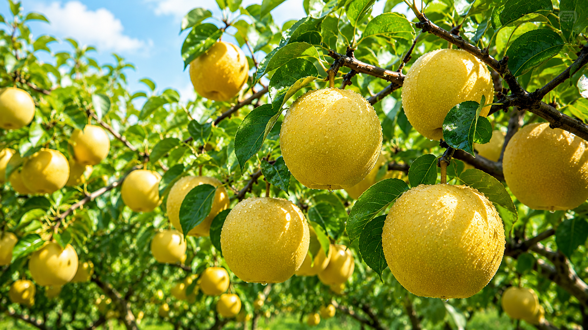
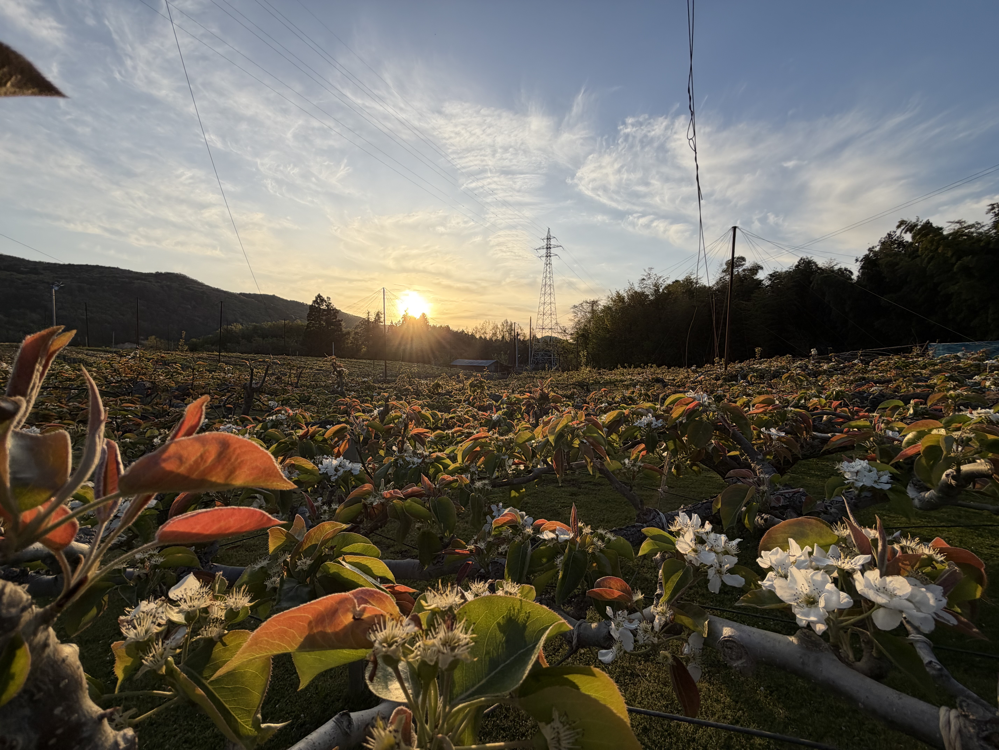
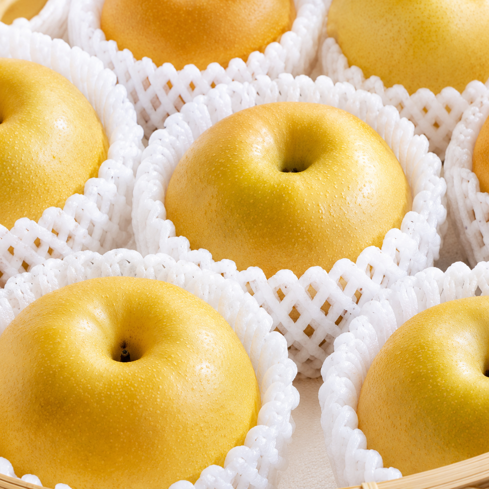

福島県郡山市 磐梯熱海より
自然の恵みを、
まるごとお届け。
太陽の光をたっぷり浴びた梨を、
心を込めて育てています。
みずみずしい美味しさを、ぜひご賞味ください。
みどり認定
環境にやさしい農業の
取組を行っています
取組を行っています
GAP認証取得
安心・安全な農業を
お届けします
お届けします
新着情報
みどり認定 × GAP認証取得農園
当園の取り組みについて

自然豊かな環境で育てる
上の山の恵まれた自然環境の中で、土づくりからこだわり、のびのびと育てています。

安心・安全へのこだわり
みどり認定・GAP認証を取得し、安心して食べていただける梨づくりを追求しています。

一番おいしい瞬間をお届け
完熟の見極めを大切に、収穫したての美味しさをお届けします。
産地直送・ご注文について
果物の販売について

アクセス方法
住所
〒963-1303 福島県郡山市熱海町玉川字平九郎内10
お車でお越しの方
磐梯熱海ICから約8分（駐車場あり）
電車でお越しの方
磐梯熱海駅からタクシーで約7分